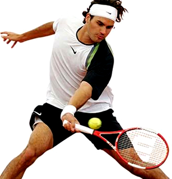

Los Mejores Jugadores Del Mundo

Rafael Nadal Perare
(Manacor, Mallorca, España, 3 de junio de 1986), más conocido como Rafa Nadal, es un tenista profesional español que ocupa actualmente la primera posición del ranking ATP.
Considerado uno de los mejores jugadores de toda la historia del tenis7 y el mejor de todos los tiempos en pistas de tierra batida.89 Incluso algunos tenistas como Andre Agassi y John McEnroe lo han ubicado como el mejor de la historia no sólo en tierra batida.1011
Hasta la fecha ha sido campeón de 16 torneos de Grand Slam, lo que le coloca como el segundo jugador profesional con más títulos "grandes" en la historia del tenis, tras el suizo Roger Federer (20 títulos). Ha conseguido el Torneo de Roland Garros en diez ediciones, siendo el tenista que más veces lo ha ganado (en 2005,122006,13 2007,14 2008,15 2010,16 2011,17 2012,18 2013, 2014 y 2017), el Campeonato de Wimbledon en dos ocasiones (200821 y 2010,22 y finalista en 2006,23 2007 y 2011),25 el Abierto de Australia en una ocasión (2009, y finalista en 2012, 2014 y 2017)26 y el Abierto de Estados Unidos en tres ocasiones (2010,27 2013 y 2017, y finalista en 2011).28 También ha logrado con España la medalla de oro en los Juegos Olímpicos de Pekín 200829 en modalidad individual y la medalla de oro en los Juegos Olímpicos de Río de Janeiro 2016 en modalidad de dobles junto a Marc López. Asimismo, forma parte como jugador internacional del Equipo de Copa Davis de España desde 2004, habiéndose alzado con el triunfo en cuatro ocasiones: 2004, 2008 (donde no pudo jugar la final por lesión), 2009 y 2011 (donde logró el punto definitivo para el equipo español). En cuatro ocasiones ha terminado el año siendo el tenista número 1 del mundo en el ranking ATP: en 2008, 2010, 2013 y 2017, además finalizó cinco temporadas como número dos, una como número tres, una como número cuatro y una como número cinco.
Es el tenista masculino más joven de la historia en conseguir el Golden Slam en la carrera (que incluye los cuatro Grand Slam y la medalla de oro de los Juegos Olímpicos no obtenidos en el mismo año) a los 24 años y 103 días —logro sólo compartido por André Agassi, que lo consiguió a los 29 años y 38 días

Roger Federer
se convierte en el jugador con más edad en alcanzar el número 1 en el ránking de la ATP, con 36 años, 6 meses y 11 días. Hasta ahora ese record lo poseía Andre Agassi, que encabezó la lista con 33 años y 3 meses. Otras figuras del tenis como Pete Sampras se retiraron poco después de superar la treintena. Rafa Nadal pierde el número 1 a favor del suizo.
Federer, con 302 semanas hasta ahora, es el tenista que más tiempo ha estado al frente de la clasificación de la ATP. Le siguen Sampras y Lendl aunque dentro del Top 10 solo Novak Djokovic (223 semanas) y Rafa Nadal (167) siguen en activo. El suizo también es el que acumula más tiempo consecutivo encabezando el tenis mundial, más de cuatro años y seis meses y en cinco ocasiones ha acabado la temporada como número 1.
Lo anticipaba a través de Twitter el australiano Darren Cahill, actual preparador de la número uno del mundo, Simona Halep, y en su día instructor del estadounidense Andre Agassi: “Disfrutando de mi (muy probablemente) último día como entrenador del número uno más veterano de la historia... Bloody [maldito] Federer!”. Y al día siguiente, ayer, bajo la pista techada de Rotterdam y ante el holandés Robin Haase, se confirmó el augurio del entrenador: 4-6, 6-1 y 6-1 (en 1h 19m), otro triunfo del suizo y acceso a las semifinales, luego a sus 36 años y 195 días, Roger Federer alcanzó un nuevo honor, el de convertirse en el tenista más veterano de todos los tiempos que ocupar la cima del tenis mundial.

Novak Djokovic
(en serbio, Новак Ђоковић, transliterado Novak Đoković en alfabeto latino, o Novak Djoković pronunciado /ˈnɔvaːk 'ʥɔːkɔviʨ/, Nóvak Yókovich; Belgrado, República Federal Socialista de Yugoslavia (actual Serbia), 22 de mayo de 1987) es un tenista profesional serbio y actual n.º 13 de la clasificación de la ATP.
Novak Djokovic es considerado uno de los mejores tenistas de la historia y con doce victorias, Djokovic se ubica cuarto en la lista de jugadores que más torneos individuales de Grand Slam han ganado, junto a Roy Emerson y por detrás de Roger Federer, Rafael Nadal y Pete Sampras: el Abierto de Australia en seis ocasiones, (2008,7 2011,8 2012,9 2013,10 201511 y 2016),12 el Campeonato de Wimbledon en tres ocasiones (2011, 2014 y 2015,13) el Abierto de Estados Unidos en dos ocasiones (201114 y 201515), y el Torneo de Roland Garros en 2016. Llegó a seis finales de Grand Slam de forma consecutiva, ganando en cinco de ellas (desde el Australian Open 2015 hasta Roland Garros 2016). Djokovic ha participado en 21 finales y 30 semifinales de Grand Slam. Luego de su victoria en Roland Garros 2016, Đoković obtuvo los cuatro torneos de Grand Slam en forma consecutiva, algo que solo habían logrado con anterioridad Don Budge y Rod Laver.16 De esta manera, se une al selecto grupo de 8 jugadores que han completado el Grand Slam, con Fred Perry, Don Budge, Rod Laver, Roy Emerson, Andre Agassi, Roger Federer y Rafael Nadal